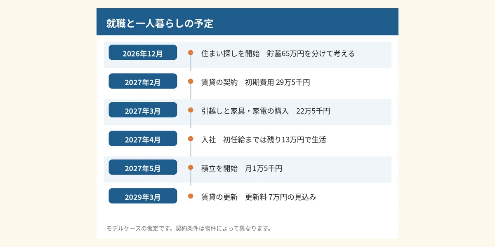
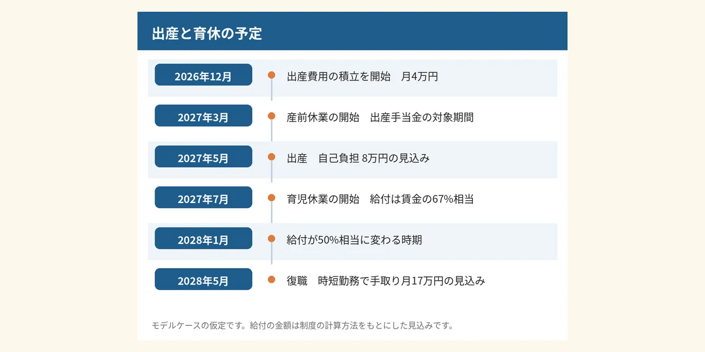
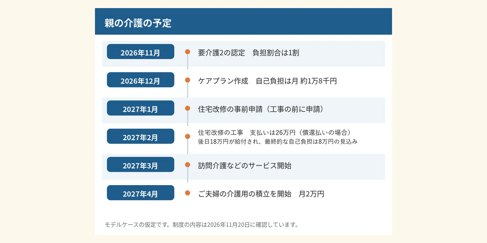
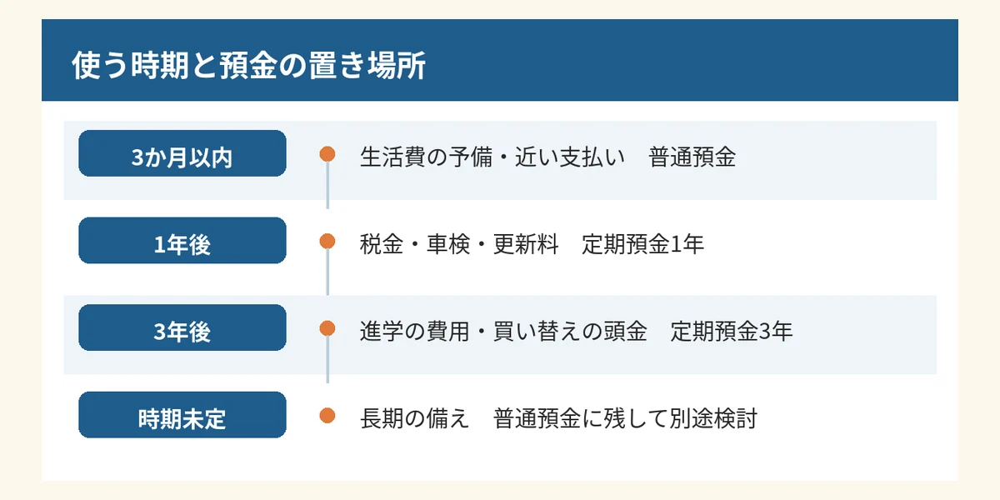

モデルケース
必要なお金は環境によってそれぞれ。
お金を知れば暮らしが豊かになります。
暮らしのシーンでお金を考える

新社会人・初めての一人暮らし
就職して一人暮らしを始めるお金 初期費用と初任給までの生活費を整理する
初期費用52万円。初任給まで13万円を残す
確認日 2026-11-20
記事を読む ›
共働き・第1子の出産前
出産と育休に備えるお金 支払いと給付の入金を分けた家計計画
自己負担8万円。給付の入金まで手元資金を残す
確認日 2026-11-20
記事を読む ›
50代夫婦・親が要介護2
親の介護が始まったとき 初期費用と毎月の費用を分ける
毎月の自己負担約1万8千円。住宅改修は8万円
確認日 2026-11-20
記事を読む ›
計算・比較型
使う時期が決まっているお金 普通預金と定期預金の比べ方
300万円を1年預けた利息の差は税引前6千円
確認日 2026-11-20
記事を読む ›
共働き・小学生のいる家庭
帰省費用の見積もり方 東京〜京都の新幹線と宿
往復・素泊まり・宿までのバス 80,310円（東京〜京都・家族3人）
確認日 2026-11-18
記事を読む ›
共働き・出社日が増えた家庭
共働きの夕食費 出社日が増えた月の計算方法
同じ献立の夕食2人分 自宅調理 1,042.20円・惣菜 1,580.04円
確認日 2026-11-18
記事を読む ›
会社員・期限付きの単身赴任
単身赴任の家電費用 洗濯機を90日借りる料金例
洗濯機の90日レンタル例 13,750円（中古・4.2kg）
確認日 2026-11-18
記事を読む ›
共働き・住宅購入
住宅購入の頭金と諸費用 共働き世帯の資金計画
頭金と確認済みの諸費用 3,396,000円（上限の仲介料を仮置き）
確認日 2026-11-18
記事を読む ›これから加えるモデルケース
先に、費用の考え方を知りたい方へ
世帯の条件にかかわらず、支払う時期と使える資金を分けることから始められます。
お金の基本を見る ›